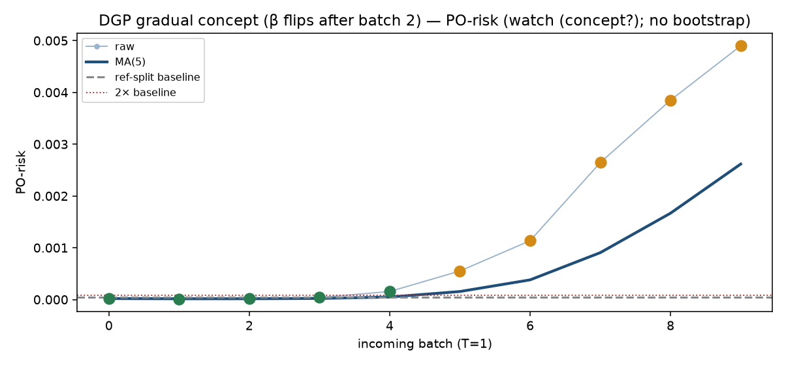
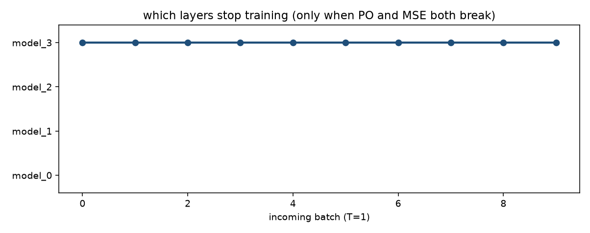

DGP gradual concept (β flips after batch 2). n_ref=10000, n_new=2000, hidden=[64, 32].
看板的输出就是：该冻结哪一层的 training（仅当 PO 和 MSE 都崩）。
PO-risk 用 RF，不该突然崩；更可能先崩的是 serving MSE。
MSE 崩了但 PO 正常 → 不是 concept drift。MMD 口径是 MMD²(X_new, X_ref)，
跟 reference batch 比，不是跟历史所有 batch 的 pairwise 均值，也不是上个 batch 的层 representation。
闭环：OnlineRFPerm 冻参考窗 RF，T=MSE−E_ref，last-two hop 标 shift-onset（onset_hat=None，labeled=2）。
看板说这是哪种 shift。PO 崩了模型没崩 → 再观察，先不冻。
两都崩 → 开 freeze-depth，model_i 只训 top i。
不做 online-bootstrap。
再观察 — 先不冻任何一层的 training


| t | PO-risk | PO MA | MSE | MSE MA | MMD vs ref | MMD MA | RFPerm T | hop | action | 冻结哪一层的 training |
|---|---|---|---|---|---|---|---|---|---|---|
| 0 | 1.916e-05 | 1.916e-05 | 0.1355 | 0.1355 | -0.0003176 | -0.0003176 | 0.003811 | keep training | 不冻任何一层的 training | |
| 1 | 1.111e-05 | 1.514e-05 | 0.1363 | 0.1359 | 0.000667 | 0.0001747 | 0.00985 | keep training | 不冻任何一层的 training | |
| 2 | 1.654e-05 | 1.56e-05 | 0.1401 | 0.1373 | 0.0003276 | 0.0002257 | 0.01221 | keep training | 不冻任何一层的 training | |
| 3 | 4.035e-05 | 2.179e-05 | 0.1689 | 0.1452 | -0.0006254 | 1.289e-05 | 0.03249 | keep training | 不冻任何一层的 training | |
| 4 | 0.0001551 | 4.846e-05 | 0.1979 | 0.1557 | 0.0005755 | 0.0001254 | 0.05545 | keep training | 不冻任何一层的 training | |
| 5 | 0.0005509 | 0.0001548 | 0.2359 | 0.1758 | 1.518e-05 | 0.000192 | 0.09664 | watch (concept?) | 不冻任何一层的 training | |
| 6 | 0.001136 | 0.0003798 | 0.2561 | 0.1998 | 0.0004526 | 0.0001491 | 0.1363 | watch (concept?) | 不冻任何一层的 training | |
| 7 | 0.002645 | 0.0009055 | 0.2773 | 0.2272 | 0.001949 | 0.0004734 | 0.1984 | watch (concept?) | 不冻任何一层的 training | |
| 8 | 0.003849 | 0.001667 | 0.2634 | 0.2461 | -0.0007784 | 0.0004428 | 0.2321 | watch (concept?) | 不冻任何一层的 training | |
| 9 | 0.004899 | 0.002616 | 0.2476 | 0.2561 | -0.0007936 | 0.000169 | 0.2617 | watch (concept?) | 不冻任何一层的 training |